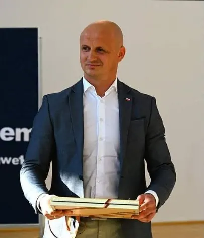
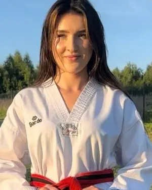
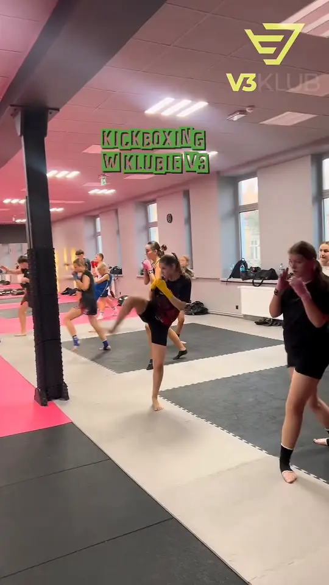
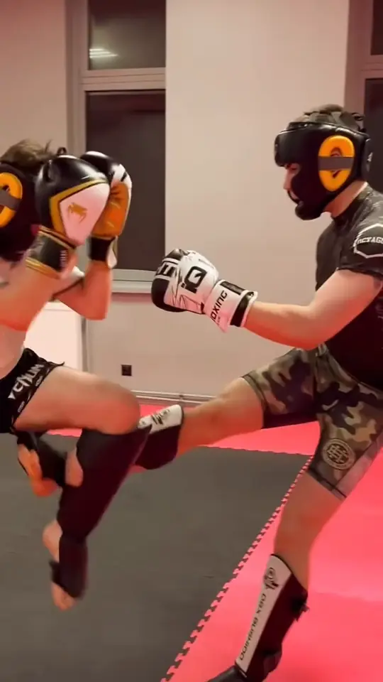
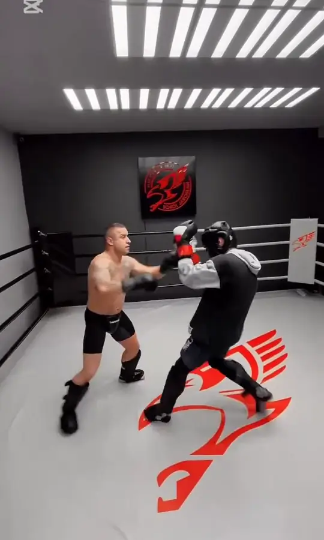
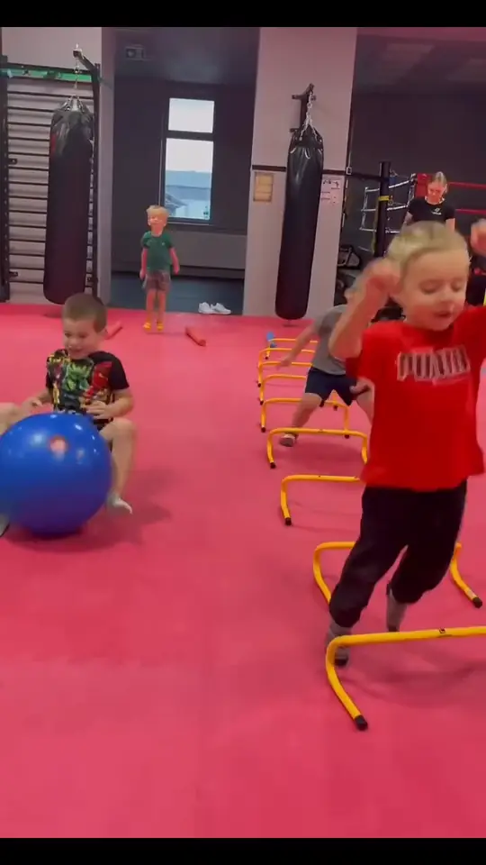

4–6 lat
Kickboxing Kids · pn, śr 16:00–16:45
Najkrótsze zajęcia, 45 minut. Dużo ruchu, koordynacji i nauki słuchania trenera, pierwsze proste techniki.
Kickboxing to najwięcej godzin w grafiku Fight Zone: pięć grup wiekowych, grupa dorosłych i Fight Team z piątkowymi sparingami. Trenerzy mają uprawnienia Polskiego Związku Kickboxingu i wychowali mistrzów Polski, Europy i świata.

Dzieci trenują z rówieśnikami, a nie z nastolatkami. Grupy są dobrane tak, żeby czas i intensywność zajęć pasowały do wieku.
Kickboxing Kids · pn, śr 16:00–16:45
Najkrótsze zajęcia, 45 minut. Dużo ruchu, koordynacji i nauki słuchania trenera, pierwsze proste techniki.
Kickboxing Start · pn, śr 17:00–17:45
Grupa dla dzieci, które zaczynają albo przechodzą z Kids. Podstawy ciosów, kopnięć i poruszania się.
Kickboxing Kadet · wt, czw 16:00–17:00
Godzinny trening we wtorki i czwartki, w inne dni niż młodsze grupy. Więcej techniki i łączenia ciosów z kopnięciami.
Kickboxing Junior · pn, śr 17:45–18:45
Młodzież szkolna. Pełna technika kickboxingu, trening kondycyjny i praca w parach.
pn, śr 20:00–21:15
Dla osób, które chcą się ruszać, zrzucić stres i nauczyć się techniki. Starty w zawodach nie są wymagane.
pn, śr 18:45–20:00 · pt 18:30–20:00 sparingi
Grupa zawodnicza. Trzy treningi w tygodniu, w piątek sparingi. Dla osób, które startują albo chcą startować.
Grafik Fight Zone obowiązuje od 1 września 2026. Pełny tydzień w grafiku zajęć.
Dwóch dyplomowanych trenerów II klasy Polskiego Związku Kickboxingu, dwóch sędziów PZKB, a przy najmłodszych instruktorka, która sama startuje.





Grupa dorosłych trenuje w poniedziałki i środy o 20:00, kiedy większość osób ma już za sobą pracę. Trening trwa 75 minut.
Uczysz się ciosów i kopnięć na workach i tarczach, pracujesz w parach i robisz sporo kondycji. Jedna z opinii o klubie mówi wprost, że te zajęcia odmieniają sylwetkę i kształtują charakter.
Jeśli zaczynasz od zera, przyjdź najpierw na trening wprowadzający w piątek o 17:30. Jeśli trenowałeś wcześniej i chcesz sparingów, porozmawiaj z trenerem o Fight Teamie.



Najczęstsze pytania o zapisanie dziecka na kickboxing w Jarosławiu.

Decyduje wiek: 4–6 lat to Kids, 7–10 Start, 10–13 Kadet, 14–18 Junior. Dziesięciolatek pasuje do Start i do Kadet, więc przed pierwszymi zajęciami zapytaj trenera, która grupa będzie lepsza.
Nie. Zajęcia dla najmłodszych to w dużej mierze ogólny rozwój ruchowy, a technika przychodzi z czasem.
Chętni mogą, ale nie muszą. Starty to domena Fight Teamu. do uzupełnienia: w jakich zawodach startują zawodnicy klubu i od jakiego wieku
| Dzień | Godzina | Zajęcia | Grupa |
|---|---|---|---|
| Poniedziałek | 16:00–16:45 | Kickboxing Kids | 4–6 lat |
| Poniedziałek | 17:00–17:45 | Kickboxing Start | 7–10 lat |
| Poniedziałek | 17:45–18:45 | Kickboxing Junior | 14–18 lat |
| Poniedziałek | 18:45–20:00 | Kickboxing Fight Team | grupa zawodnicza |
| Poniedziałek | 20:00–21:15 | Kickboxing dorośli | dorośli |
| Wtorek | 16:00–17:00 | Kickboxing Kadet | 10–13 lat |
| Środa | 16:00–16:45 | Kickboxing Kids | 4–6 lat |
| Środa | 17:00–17:45 | Kickboxing Start | 7–10 lat |
| Środa | 17:45–18:45 | Kickboxing Junior | 14–18 lat |
| Środa | 18:45–20:00 | Kickboxing Fight Team | grupa zawodnicza |
| Środa | 20:00–21:15 | Kickboxing dorośli | dorośli |
| Czwartek | 16:00–17:00 | Kickboxing Kadet | 10–13 lat |
| Piątek | 18:30–20:00 | Kickboxing Fight Team: sparingi | grupa zawodnicza |
Grafik Fight Zone obowiązuje od 1 września 2026. Pełny tydzień: grafik zajęć.
Moja córka 4 lata trenuje pod okiem pana Jacka. Ani ja, ani ona nie mamy żadnych uwag do metod, jakie stosuje. Treningi są na wysokim poziomie.
Szczególnie polecam spróbować zajęć z kickboxingu, które odmieniają sylwetkę i kształtują charakter.
Szczerze polecam tę siłownię, a szczególnie strefę Fight Zone i zajęcia z trenerem Jackiem, który zawsze zaraża pozytywną energią, tłumaczy każdy krok…
Trenuję z nimi 10 lat. Atmosfera jest wyjątkowa, a podejście do ludzi pełne szacunku.
Fragmenty opinii z Map Google, skrócone.
W V3 Klub od 4 lat. Grupa Kickboxing Kids dla dzieci 4–6 lat trenuje w poniedziałki i środy od 16:00 do 16:45.
Grupy Kids i Start trenują 45 minut, Kadet i Junior godzinę, a dorośli i Fight Team 75 minut.
Nie musisz. Sparingi to osobny piątkowy trening Fight Teamu, czyli grupy zawodniczej.
Tak. Najlepiej przyjść na piątkowy trening wprowadzający o 17:30, a potem do grupy dorosłych w poniedziałek lub środę o 20:00.
Ceny karnetów dla dzieci i dorosłych są w cenniku.
Zadzwoń i powiedz, ile lat ma zawodnik. Podpowiemy grupę i termin pierwszego treningu.